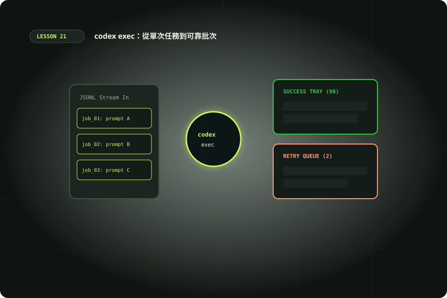

codex exec：從單次任務到可靠批次
管理輸入、JSONL、結果驗收與失敗，建立可重跑的批次流程。

準備與學習成果
開始前準備
- 完成14，具備CLI、Git與Python3.10+；離線lab不需登入
完成後你能
- 區分stdout/stderr/JSONL與schema結果
- 以程序、結構及審查三層驗收批次
- 設計有限重試與明確session恢復
兩小時實作安排
時間包含閱讀、操作、修正與驗收；不是純閱讀時間，也不是工具執行時間保證。
把互動工作轉成固定工作單
第14課認識整合入口，本課把 codex exec 拆成能反覆操作的流程。互動模式適合探索需求；非互動模式適合已固定輸入、限制與驗收的單次任務。它不是把整段聊天壓成一行，也不會在腳本中替你釐清業務。先選一個唯讀 README 審查，不立即做自動修復或發布。非互動模式說明執行與輸出行為。需要 Codex CLI、可登入帳號及 Git 練習專案；記錄版本、目前目錄與登入模式。ChatGPT 登入和 API key 使用不同計費來源，不因購買 Plus 就假設 API 免費。先完成本課離線 lab，再自行選擇會使用額度的真實執行。
codex --version
codex exec --help
codex login status
git status --short提示檔、stdin 與工作目錄
下載 prompt.txt 與 schema.json。從網站專案根目錄執行，或複製到自己的 Git 練習專案。提示檔能記錄任務版本、比較修改，避免命令列轉義造成內容改變。下方以 - 將 stdin 當作提示；-C 明確指定工作目錄，應先確認路徑。提示交代「唯讀」是工作範圍，--sandbox read-only 才是執行邊界。先用不含外部帳號資料的合成檔案，外部內容只作資料，不作新指令。固定工作單還要寫出成功條件、失敗如何回報與不得進行的額外動作，否則腳本化只會放大原本的模糊需求。
mkdir -p /tmp/codex-exec-lab
codex exec -C . --sandbox read-only -o /tmp/codex-exec-lab/final.txt - < examples/21/prompt.txt 2> /tmp/codex-exec-lab/progress.log分清最終文字、事件與結果契約
一般模式的進度寫入 stderr，最終訊息寫入 stdout；-o 另存最後訊息。--json 則讓 stdout 成為一行一筆 JSON 的事件流，不是整份 JSON 陣列。不要把 stderr 混到 JSONL 再交解析器，也不要以最後一行一定是最終答案作為永久假設。下載 events.jsonl，它只有合成的 thread.started 與 turn.completed 事件，並非完整官方事件樣本，更不是實際執行紀錄。逐行讀取、按 type 處理，忽略尚未支援的事件時仍應保留原始檔。記下 thread ID 可追蹤後續同一工作，事件完成只能證明該層流程完成，不能證明結果正確。
codex exec -C . --sandbox read-only --json --output-schema examples/21/schema.json -o /tmp/codex-exec-lab/result.json - < examples/21/prompt.txt > /tmp/codex-exec-lab/events.jsonl 2> /tmp/codex-exec-lab/progress.log
python3 -m json.tool /tmp/codex-exec-lab/result.json離線 lab：退出碼不等於驗收通過
讀 batch_lab.py 和 jobs.json。schema 約束欄位，不保證證據支持結論；退出碼零也不代表沒有審查問題。lab 將程序層、結構層與審查層分開，逐筆檢查 schema_version、pass 的真布林型別及 findings 的 severity/message/evidence。若 pass=true 但含 P1，判為 contradictory-result；空證據為 missing-evidence。這是本站教學契約，不是 Codex 內建審查標準。先預測每筆 verdict 再執行；腳本不連模型、不寫檔。把結果欄位改成字串 true、移除 evidence、加入未知嚴重度，觀察結構檢查與語意檢查是否給出不同原因。
python3 examples/21/batch_lab.py有限重試與批次紀錄
樣本中的 process_code=17 是人為設定，不代表官方限流或沙箱退出碼。lab 只對 classification=confirmed-transient 的模擬故障重試，最多三次；權限、格式與審查拒絕直接停止。真實流程必須從程序退出碼、錯誤內容與已執行動作判斷原因，不能把所有非零都當暫時問題。重試需有退避、總時間上限及額度上限；曾寫檔的任務先核對狀態，避免同一動作做兩次。每個 job 用獨立目錄，記錄 job ID、提示與輸入雜湊、CLI/模型、起止時間、每次退出碼與成果位置。保留失敗，不只挑最好的一次；批次並行應先確認各 job 的檔案與 thread 不共用。
把包裝器寫成可以失敗的程式
實際包裝器至少需要六個欄位：job_id、input_sha256、prompt_sha256、process_returncode、acceptance與artifact_paths。程序失敗時不要讀上次殘留的result.json；先為本次建立新目錄，再啟動CLI。若程序退出碼零但結果缺檔，記為missing-artifact，不以空findings冒充沒有問題。解析成功後仍須檢查契約版本，版本不支援直接停止交給人工確認。把stderr保留為診斷來源，不能依文字出現error就判定整體失敗，因為正常工具排錯也可能含這個字。真正的上游狀態由程序與你的驗收邏輯共同產生。
恢復同一任務與建立下一次任務
同一任務兩階段可以用明確 session ID 執行 codex exec resume；獨立資料批次通常建立新任務，避免前一件資料影響下一件。--last 適合人手確認目前目錄的最近任務，不適合多工作排程自行猜測。--ephemeral 不保存 session rollout，與稍後依 ID 恢復的需求不相容。恢復前檢查 HEAD、輸入與權限是否變動，原始 thread 沒有替你鎖住工作目錄。Developer commands列出 exec 與 resume 的參數；各子命令支援選項可能不同，因此先看 help，不把第一次 exec 的所有旗標原樣貼到 resume。若 ID、目錄或成果來源無法確認，停止派送並人工核對。
codex exec resume --help
# 用你自己的 ID 替換 SESSION_ID，這是可選的模型操作
codex exec resume SESSION_ID "依上次審查只整理尚待確認的證據，不修改檔案。"用Python避免shell轉義與無限等待
subprocess.run以參數陣列呼叫，cwd明確指定repo，input讀取提示檔。capture_output分開取得stdout/stderr，timeout給總等待上限；捕捉TimeoutExpired後保留已取得的輸出並記錄中斷。若需要stream事件則改用Popen逐行讀取，但仍要監控程序終止與逾時。把每次等待與重試時間記錄，才能知道額度花在哪裡。正式批次先用一筆唯讀任務，檢查命令存在、登入狀態、輸出目錄權限與Git前置條件，再逐步增加數量；不要從幾十筆並行開始猜測平台限流。
讓 CI 收集成果，再由另一階段決定交付
實際批次腳本用 subprocess 參數陣列與 input 傳入文字，避免 shell=True 拼接使用者內容；設 timeout，將 stdout/stderr 分開存檔。逾時不代表底層寫入已回退，需核對現場後再續跑。CI 的分析工作只取得必要讀取權限，產生報告或 patch；開 PR 或部署放在明確授權的另一階段。公開 PR 的文字與程式都可能不可信，不讓模型自行把它們變成 shell 指令。第14課介紹 Codex GitHub Action，本課先把相同工作單在本機跑懂再接 CI。完成條件是保留可追溯產物、阻擋格式錯誤與無證據結論，並讓失敗工作的退出狀態能被上游辨識；不能只把文字「PASS」送到 CI 就算成功。
可下載的Python包裝器
run_review.py預設只印preview，不建目錄也不呼叫Codex；先核對command與輸入hash。加--execute才是實際模型操作，可能使用額度。它用全新out目錄、180秒預設逾時與唯讀sandbox，保存events/stderr/result/run；程序非零、缺結果或契約拒絕都不能completed。這個最小包裝器不自動重試，不收集真實模型標籤，也沒有替內容證據做人工判讀；run.json的completed只代表程式契約通過。逾時仍需檢查是否有底層程序或部分成果，不宣稱交易回退。
python3 examples/21/run_review.py --repo . --out /tmp/codex-review-unique交辦、變體與驗收
先讓 Codex 讀輸入與契約，列出預期結果，再操作與核對。保存正常與失敗紀錄；模型尚未執行的步驟應寫「未觀察」。把環境、命令、輸入、結果與仍待確認的限制一起交付，讓接手者能在另一個乾淨目錄重現。不要只提交一張成功畫面或一句全部通過。
情境判斷
驗收與完成
官方與第一手來源
範例與操作安排由本站整理。查證日期：2026-10-10；版本、帳號與本機環境不同時，請核對原始文件。